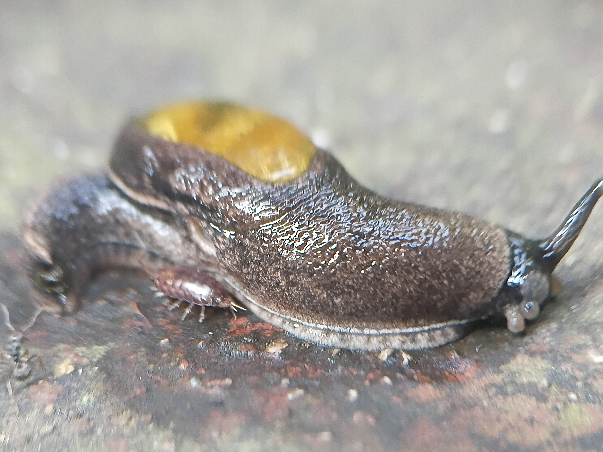
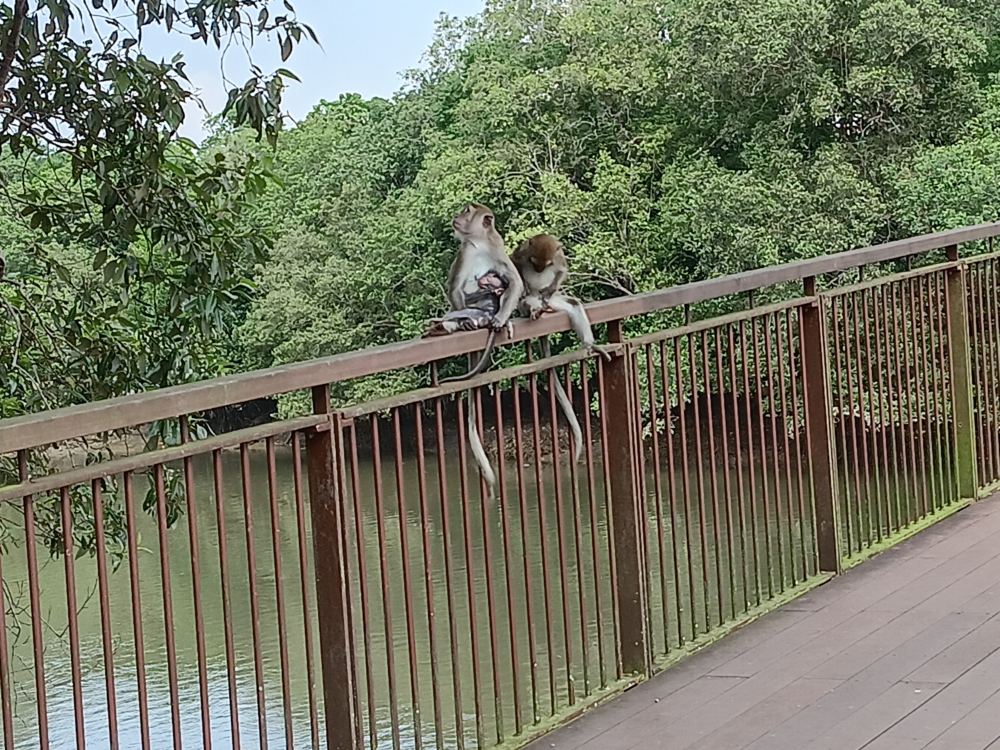
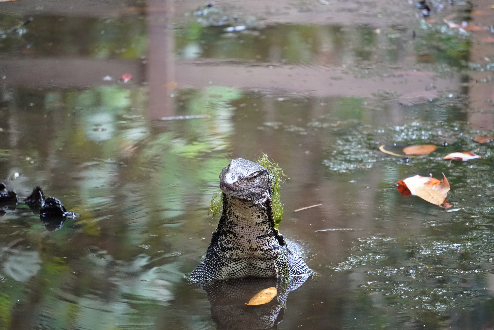
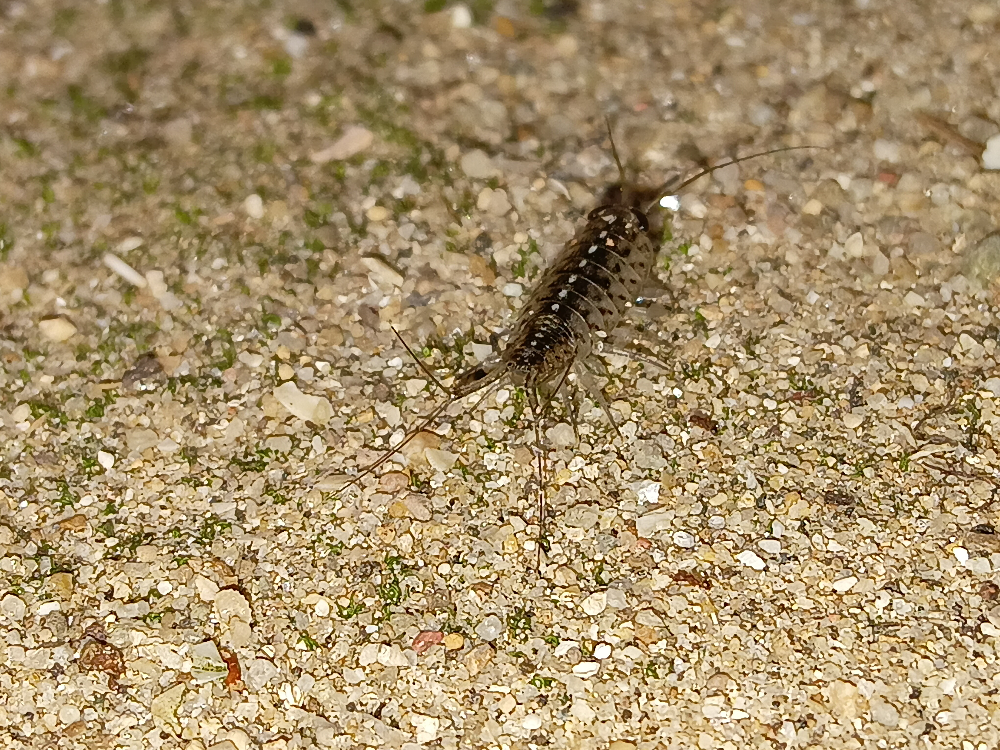
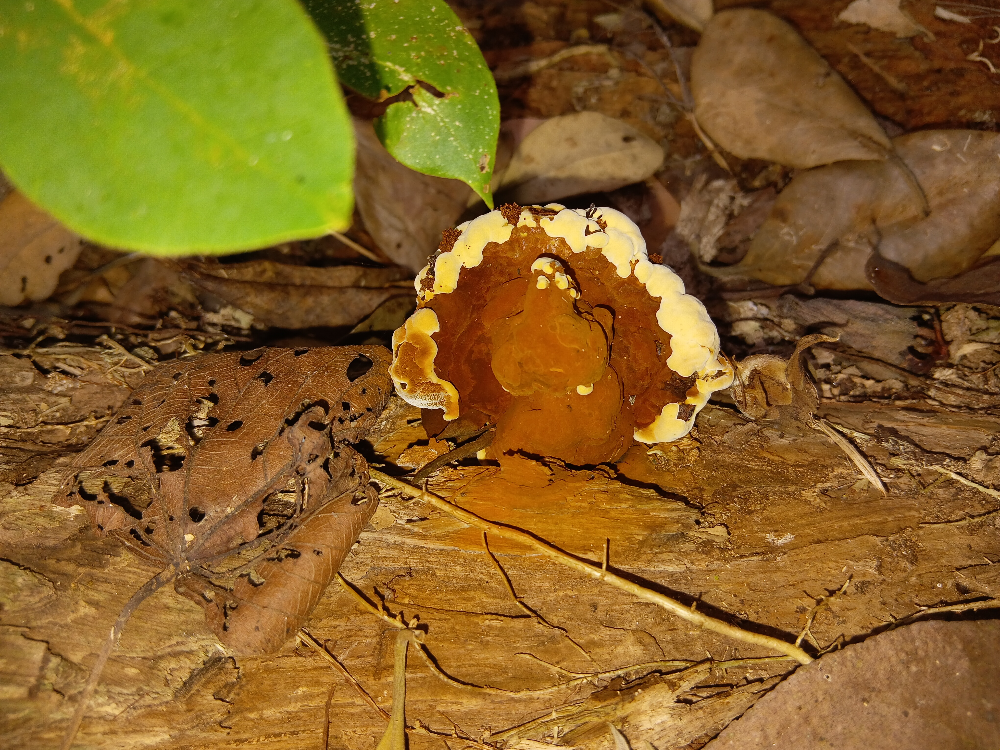
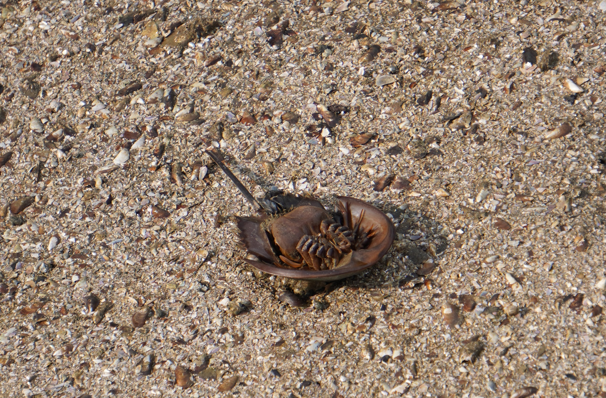
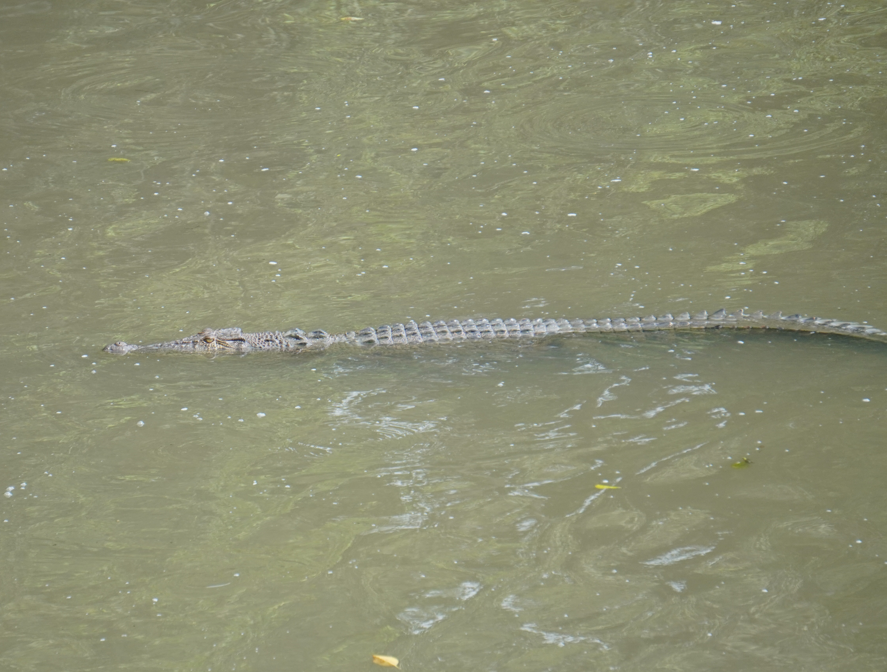
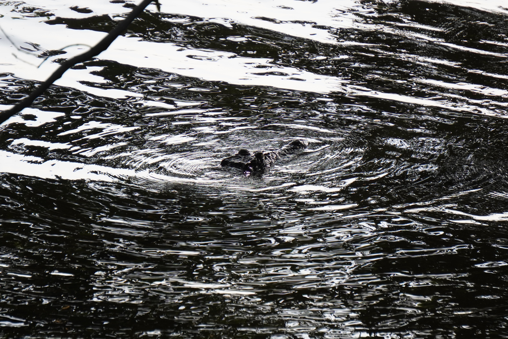
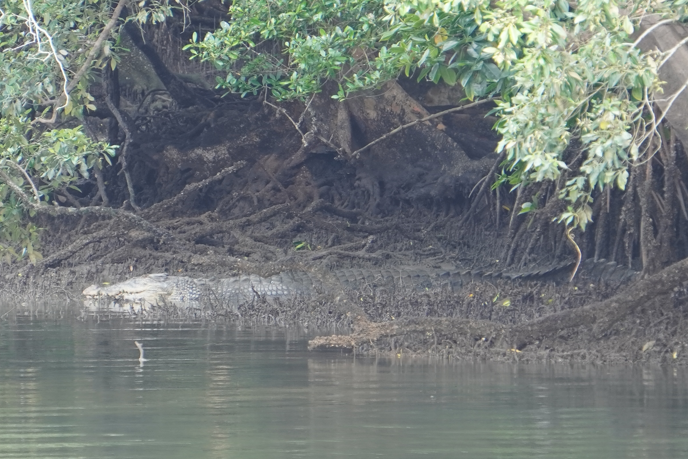

Singapore has a multitude of organisms that manage to inhabit the city despite losing majority of the original habitat.
Enormous Malayan Monitors roam parts of the city, digging for food or scavenging from hunters who already made their catch. Long Tailed Macaques inhabit forested areas in large numbers where they rear their young and search for food. The largest reptile, the Saltwater crocodile, can be found in the mangroves of Sungei Buloh. They are less tolerant of their kind than the Nile crocodile sof Africa and will defend their territory if it comes to it.








